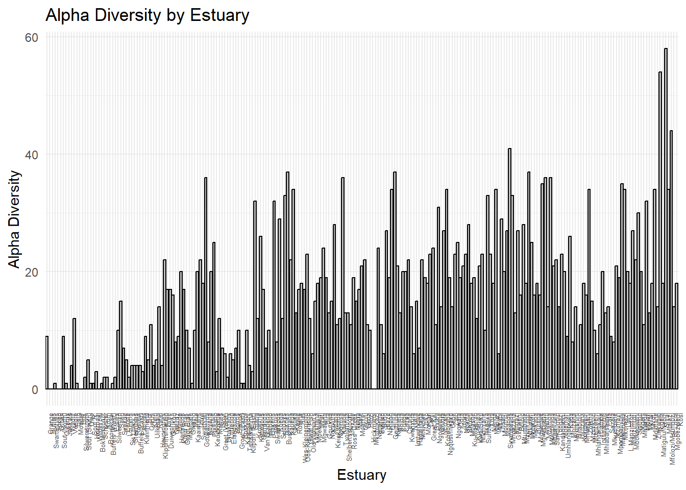

EF <-read.csv("C:/Users/Dell/OneDrive/Desktop/UCT/Marine Spatial Planning/Marine-Spatial-Planning/data/EstuaryFishSurveyData.csv") # read data into a dataframe.
Replace the NA values with 0.
EF[is.na(EF)] <-0
Plot Number of Species
Create a separate column, called alpha, which counts the number of species per estuary.
EF$alpha <-specnumber(EF[ 4:148])
Now create a plot.
# Keep the original order of EstuariesEF$Estuary <-factor(EF$Estuary, levels =unique(EF$Estuary))# Plot barplotggplot(EF, aes(x = Estuary, y = alpha)) +geom_bar(stat ="identity", fill ="grey", color ="black") +labs(title ="Alpha Diversity by Estuary",x ="Estuary",y ="Alpha Diversity") +theme_minimal() +theme(axis.text.x =element_text(angle =90, hjust =1, size =5))

Calculate Shannon-Weiner Diversity Index. This index takes into account the number of species and the evenness. We can do this using the diversity function in the package vegan.
EF$SW <-diversity(EF[ 4:148], index ="shannon")
Plotting diversity.
alpha - Y axis
kmEast - X axis
Creating a kmEast column. Subtract 3000 from kmWest.
EF$kmEast <-3000- EF$kmWest
Create a plot for alpha against kmEast.
ggplot(EF, aes(x = kmEast, y = alpha)) +geom_point(color ="black", size =2, alpha =0.7) +labs(title ="Scatterplot of Alpha Diversity vs. kmEast",x ="Distance from Western Boundary (kmEast)",y ="Alpha Diversity") +theme_minimal()
Create a plot for Shannon-Weiner against kmEast.
ggplot(EF, aes(x = kmEast, y = SW)) +geom_point(color ="black", size =2, alpha =0.7) +labs(title ="Scatterplot of Shannon-Weiner Diversity vs. kmEast",x ="Distance from Western Boundary (kmEast)",y ="Shannon-Weiner Diversity") +theme_minimal()
Alpha Method
Now rank from highest to lowest diversity.
alpha_rank
Top 20 - 1
The rest get a 0.
# order the data frame.EF <- EF[order(-EF$alpha),]# rank the top 20.EF$alpha_list <-0EF$alpha_list[1:20] <-1
Now plot the top 20 in red on the graph.
ggplot(EF, aes(x = kmEast, y = alpha, color =factor(alpha_list))) +geom_point(size =2, alpha =0.7) +scale_color_manual(values =c("0"="black", "1"="red"),labels =c("Other", "Top 20"),name ="Alpha Rank") +labs(title ="Scatterplot of Alpha Diversity vs. km East",x ="Distance from Western Boundary (km East)",y ="Alpha Diversity") +theme_minimal()
The most diverse estuaries are in the East.
Species in the East might not be the same in the West - if we protect all these estuaries in the East, species in estuaries in the West would not be protected.
Economic issues - economic opportunities and struggles restricted to the East.
Climate change - shifting patterns in diversity.
NEED TO SPREAD PROTECTION.
Now we need to save the top 20. This takes the top 20 estuaries and creates a new data frame containing the list of the top 20 estuaries.
There are 116 species of the 144 species represented in the top 20 most diverse estuaries. But how effective is this system? What percentage of species does this list account for?
76% of the species are protected using the Shannon-Weiner method. Therefore, Shannon-Weiner is worse than alpha diversity.
Biogeographic Zonation Method
Calculating the number of species for each biogeographic zone (E, W and S).
specnumber(EF[,4:148], EF$BZ)
E S W
111 79 21
Look at the most diverse estuaries in the three zones. Take 6 from W, 7 from E and S.
Order twice, by zones and then by alpha.
First to order by biogeographic zone. The code below orders the estuaries into biogeographic zones and orders the alpha within each biogeographic zone.
EF <- EF[order(EF$BZ, -EF$alpha),]
Creating a list.
EF$BZ_list <-0# top alphas per zone top_n <-c(W =6, S =7, E =7 )# create a loop which labels the top as 1for (z innames(top_n)) { zone_rows <-which(EF$BZ == z) EF$BZ_list[head(zone_rows, top_n[z])] <-1}
Plot the list.
ggplot(EF, aes(x = kmEast, y = alpha, color =factor(BZ_list))) +geom_point(size =2, alpha =0.7) +scale_color_manual(values =c("0"="black", "1"="red"),labels =c("Other", "Top estuaries"),name ="Alpha Rank") +labs(title ="Scatterplot of Alpha Diversity vs. km East",x ="Distance from Western Boundary (km East)",y ="Alpha Diversity") +theme_minimal()
Alot of these estuaries are still closer to the eastern side of the country.
The species list.
BZ_spp <-specnumber(EF[,4:148], EF$BZ_list)BZ_spp
0 1
120 122
Percentage.
BZ_percentage <- (122/145) *100BZ_percentage
[1] 84.13793
Dendrogram
Creating a matrix of pairwise comparisons between each estuary to develop an index of similarity in species composition. Using species composition to inform us on “ecosystem types”, and using that to compile a list of all ecosystem types which need to be represented.
Create a standardised matrix.
EF <-subset(EF, alpha>0)EF_deco <-decostand(EF[,4:148], method ="total")
Create the list which selects the two most diverse estuaries from the slice80 groups.
EF$slice80_list <-0for (g inunique(EF$slice80)) { group <-which(EF$slice80 == g)# if group has 2 or more rows, score top 2 if (length(group) >=2) { top_2 <- group[1:2] EF$slice80_list[top_2] <-1# if group has only 1 row, assign it a 1 } elseif (length(group) ==1) { EF$slice80_list[group] <-1 }}
These groupings are great, but notice that some of the groups in the slice80_list only have 1 estuary in them, which leaves us with only 17 estuaries total, but we want a total of 20 estuaries, so we need to select 3 from the larger groups.
Looking at the EF data frame, groups 2, 3 and 6 in the slice80_list column have the most number of estuaries, so let’s select an additional estuary from each one.
target_slices <-c(2, 3, 6)for (g in target_slices) { group <-which(EF$slice80 == g)# if group falls within our targetted slices, we assign the top 3 a value of 1 if (length(group) >=3) { EF$slice80_list[group[1:3]] <-1 } elseif (length(group) >0) { EF$slice80_list[group] <-1 }}
Great it worked, let’s plot these estuaries on our alpha plot.
ggplot(EF, aes(x = kmEast, y = alpha, color =factor(slice80_list))) +geom_point(size =2, alpha =0.7) +scale_color_manual(values =c("0"="black", "1"="red"),labels =c("Other", "Top 20"),name ="Alpha Rank") +labs(title ="Scatterplot of Alpha Diversity vs. km East",x ="Distance from Western Boundary (km East)",y ="Alpha Diversity") +theme_minimal()
However, this is way less species than our previous methods.
Range Centre Method
Let’s try a different method using the range and range centre for each species. To do this we will need to calculate the western and eastern limits, as well as the centre of the range for each species.
First we need to extract the species abundance data and kmWest values from EF.
# species abundance dataspp <- EF[, 4:148]# distance from western boundarycoords <- EF$kmWest
Now we need to calculate the range for each species. We can create a function to do this.
range_stats <-function(abundance, coords) { present_coords <- coords[abundance >0] # get kmWest values where species is presentif (length(present_coords) ==0) {# species not present anywherereturn(c(west_limit =NA, east_limit =NA, center =NA)) } else { west <-min(present_coords) # furthest west point east <-max(present_coords) # furthest east point centre <-mean(c(west, east)) # center of rangereturn(c(west_limit = west, east_limit = east, centre = centre)) }}# apply the function across all species (columns)spp_range <-t(apply(spp, 2, range_stats, coords = coords))
Now we just need to plop our results into a dataframe which contains the species names as well as their west_limit, east_limit and centre values.
# convert result to a clean data framespp_range_list <-data.frame(Species =colnames(spp), # species names from column headers spp_range # range stats: west, east, center)# preview first few rows of the resulthead(spp_range_list)
Now we can plot a histogram with the frequency of range centres per 100 km.
ggplot(spp_range_list, aes(x = centre)) +geom_histogram(binwidth =100, fill ="grey", color ="black") +xlab("Range Centre (km West)") +ylab("Number of Species") +ggtitle("Frequency of Species Range Centres (per 100 km)") +theme_minimal()